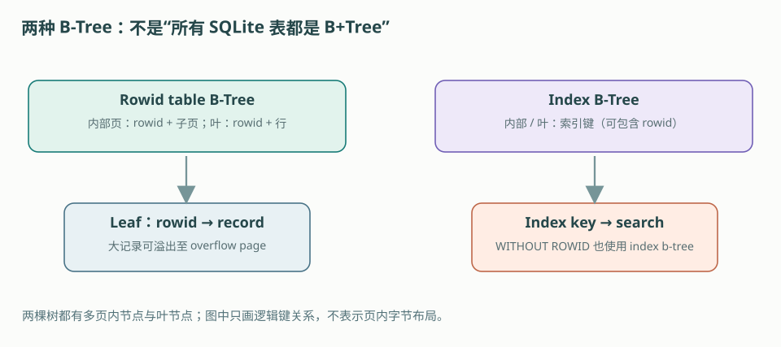
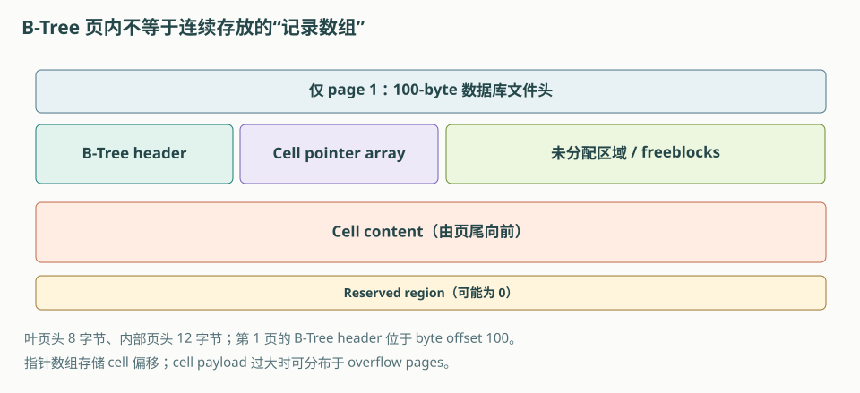
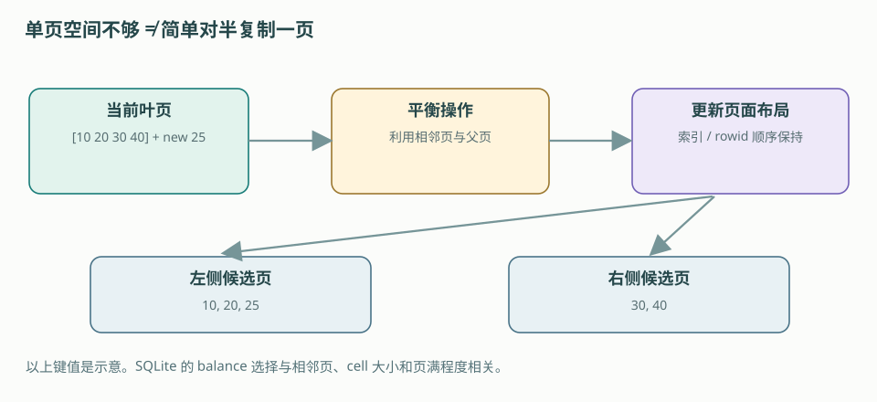

B-Tree 存储引擎：从 rowid 到页面字节布局
B-Tree 的“键查找”最终怎样落入数据库文件？本章以官方文件格式为准，分辨表树与索引树、页头、cell offset、溢出页和页面平衡。
1. 同叫 B-Tree，表与索引存储的到底是什么？
在普通 rowid table 中，表 B-Tree 的 key 是 rowid；叶节点保存 rowid 对应的序列化记录，内部节点存放用于导航的 rowid 和子页指针。索引 B-Tree 则以索引键为核心，其内部页和叶页都可能保存索引键 cell；二者的 cell payload 形式不同。

官方 文件格式规范指出：表内部页只保存整数键与子指针，表叶页包含实际行记录；索引 B-Tree 内部页与叶页具有索引键；WITHOUT ROWID 表在物理层改用 index B-Tree。这些区别影响覆盖索引、行定位与存储布局，不能用一句“SQLite 使用标准 B+Tree”概括。
从 sqlite_schema 找到 root page
SELECT type, name, rootpage
FROM sqlite_schema
WHERE type IN ('table','index')
ORDER BY rootpage;这里的 rootpage 是 B-Tree 的根页面编号，不是 root pointer 的内存地址。每个文件页从第 1 页开始编号；数据库第 1 页包含数据库文件头并且其 B-Tree 是 sqlite_schema。虚拟表不按同样的物理一表一树规则直接存储；其 shadow tables 另有实现差异。
2. 真正的页面包含哪几段？
SQLite 数据库采用固定大小的 page。文件第 1 页开头有 100 字节数据库头，B-Tree 页面头紧跟其后；其余普通 B-Tree 页直接从页首放头。叶页头 8 字节，内部页头 12 字节。随后是 2 字节偏移数组，它按 key 顺序索引 cell，而 cell 本身往往位于页面靠后的空间，不保证物理位置按键值排序。

| 区域 | 位置与含义 | 对调试的价值 |
|---|---|---|
| 数据库头 | 仅 page 1，前 100 bytes | Magic、page_size、计数器等 |
| B-Tree 页头 | 叶 8 bytes / 内部 12 bytes | 页类型、cell 数量、freeblock 入口 |
| Cell offset array | 页头之后，按键顺序排列 | 每项 2 bytes，定位实际 cell |
| Unallocated / freeblocks | 空闲片段与链表 | 解释碎片与空间回收 |
| Cell content / reserved | 页内实际负载及尾端预留区 | 记录/键/overflow 指针 |
四种页标志分别为 index interior 0x02、table interior 0x05、index leaf 0x0A、table leaf 0x0D。这些是 SQLite 文件格式中的定义，而不是运行时 opcode 编号。
3. Cell 如何存放键、记录与 overflow？
行数据首先被序列化为 SQLite record format，然后作为 table B-Tree 叶 cell 的负载。索引键也以记录格式组织，但其字段与表行不同。较大的 payload 不能无条件塞进单页，而是将一部分保留在 B-Tree cell 中，其余通过 overflow page 链存放。
所谓 overflow 是官方文件格式机制；不能把“长字符串一定经过溢出页”作为固定规则，因为它取决于 page size、payload 长度以及表树/索引树允许的本地存储上限。可以通过把 page size 设小、再写入较大 BLOB 来观察文件页数显著变化，但页数变化本身不是精确的 overflow 数量计数。
源码路径
btree.c 负责游标搜索、读写与平衡等过程，btreeInt.h 保存相关内部定义；具体的序列化记录在 VDBE 层与 record helpers 中也有实现。应优先以 sqlite3BtreeMovetoUnpacked()、sqlite3BtreeInsert() 等具体符号和所检出的 SQLite 版本为锚点，而不是把多个版本的结构体字段拼成统一“内存图”。
4. 页面插入后空间不够，真会一刀切成两半吗？
B-Tree 的重要不变量是有序键和树高关系；更新一个节点时，如果需要容纳更多 cell，代码可能重新组织当前页、参考相邻页面、将内容重新分布，或者调整上层结构。这类过程在 btree.c 的平衡逻辑中体现。

页面平衡同时受 cell 可用空间、freeblock、overflow 和相邻页影响。写教程时如果不分析具体源版本，不应宣称每次插入到“满页”都会产生一个固定的新页数量，也不应给出毫无上下文的“百万行通常只有两层”之类数字。
5. 用 Python 读取真正的 SQLite 文件头与页面标志
项目包含可直接运行的 examples/12_file_inspect.py。它在临时目录新建文件型数据库，并在建表前指定 PRAGMA page_size=1024；再创建 rowid 表和索引，写入足够多的记录。关闭连接后用 struct.unpack() 读取文件头、页大小与根页类型。
python3 examples/12_file_inspect.py
# 输出示意，真正 page_count 与 rootpage 会因 SQLite 版本/布局不同
# sqlite_version=...
# page_size=1024
# users root=... flag=0x05 或 0x0d
# users_name root=... flag=0x02 或 0x0a
# integrity_check=ok此处固定检查的是 SQLite 数据库 Magic SQLite format 3\x00、page size 和四种有效页类型；不会断言索引恰好有几层、写入后恰好有多少个页面。你可以把当前实验的输出与官方格式文档逐字段对照，而不需要使用 SQLite 的私有 C 结构体。
再用 SQL 观察页数与 schema
PRAGMA page_size;
PRAGMA page_count;
SELECT name, rootpage FROM sqlite_schema WHERE type IN ('table','index');
PRAGMA integrity_check;注意 PRAGMA page_size 的修改时机：对已有数据库，它通常不能简单直接生效；要事先配置新库，或遵循官方文档规定的 VACUUM 与 journal mode 限制。
6. 从键空间到文件偏移的一次完整推演
阅读与验证任务
- 记录目标数据库的 page_size 与表 rootpage；
- 根据页号计算文件偏移：
(page_no - 1) × page_size； - 若 rootpage = 1，B-Tree 页标志位要在额外 100 字节处读取；其它页从页首读取；
- 核对
sqlite_schema是否包含相应 table 和 index； - 从
btree.c中找一个对页 cell 或游标操作的源符号，标明源版本。
自测：cell pointer array 排序意味着 cell 内容物理上也连续排序吗？
不意味着。cell 指针数组按键顺序保存偏移，cell content 区域的实际位置可以不连续，并且可能存在 freeblocks。
下一章进入 Pager/PCache：已有 B-Tree page 的读写何时命中缓存，何时触发持久化约束。
官方原始资料与版本边界
本章结构图使用独立原创教学抽象；具体 opcode、源代码调用路径、B-Tree 平衡策略或日志行为请绑定你检出的 SQLite 源版本。图示不替代 SQLite 文件格式或 C API 规范。
- SQLite Database File Format · SQLite 官方资料
- Database File Format Overview · SQLite 官方资料
- WITHOUT ROWID tables · SQLite 官方资料
- PRAGMA page_size / integrity_check · SQLite 官方资料